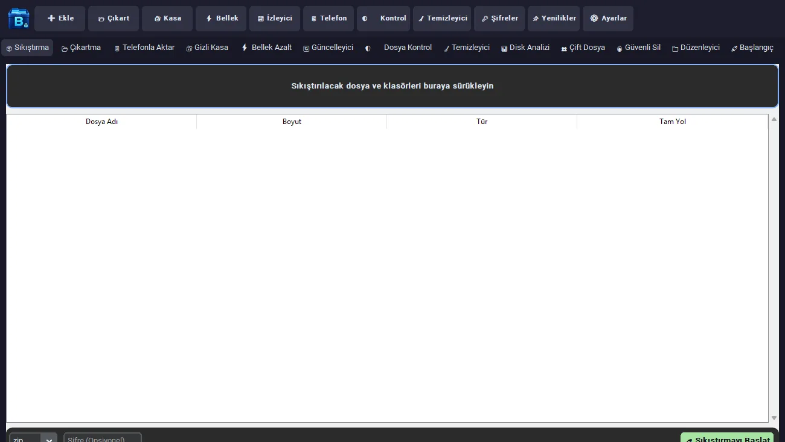

v4.0.1 yayında
Dosyalarınız için tek araç.
Sıkıştırma, şifreli kasa, sistem temizliği, şifre yöneticisi ve telefona güvenli aktarım — hepsi Windows için tek, hafif bir uygulamada.

Özellikler
İhtiyacınız olan her şey, tek pencerede
Ayrı ayrı programlar kurmak yerine günlük dosya işlerinizi tek yerden yapın.
- 📦
Sıkıştırma & Çıkartma
ZIP, 7z, TAR, GZ ve .beyt arşivleri. Sürükle-bırak, şifreli ZIP (AES) ve yol geçişi saldırılarına karşı güvenli çıkartma.
- 🔐
Gizli Kasa (.beyt)
Dosyalarınızı AES-256-GCM ve scrypt anahtar türetme ile şifrelenmiş tek bir kasa dosyasına dönüştürün.
- 📱
Telefonla Aktar
QR ile eşleştirin, altı haneli kodu onaylayın; dosyalar yerel ağda TLS ile şifreli ve SHA-256 doğrulamalı gider.
- 🔑
Şifre Yöneticisi
Ana parola ile kilitlenen, cihazınızda saklanan şifreli kasa. Sekmeden çıkınca otomatik kilitlenir.
- 🧹
Sistem Temizleyici
Windows Temp, AppData Temp, önbellek ve geri dönüşüm kutusu. Önce tarar, ne sileceğini gösterir, sonra onayınızla temizler.
- 👥
Çift Dosya Bulucu
Önce boyuta göre gruplar, yalnızca eşleşenleri SHA-256 ile karşılaştırır — büyük klasörlerde bile hızlıdır.
- 📈
Kaynak İzleyici
CPU ve RAM kullanımını canlı izleyin. Sekmeden ayrılınca izleme durur, boşuna kaynak harcamaz.
- 🔥
Güvenli Silme
Dosyanın üzerine üç kez yazıp siler. (SSD'lerde donanım nedeniyle tam silme garanti edilemez.)
- 📁
Akıllı Düzenleyici
Masaüstü ve İndirilenler klasörünü türlerine göre düzenler; aynı isimli dosyaların üzerine asla yazmaz.
- 🧮
Hash & Dosya Kontrolü
MD5/SHA-1/SHA-256 hesaplama, gizlenmiş çift uzantı uyarısı ve EICAR test imzası kontrolü.
- 📊
Disk Analizi & Başlangıç
Hangi klasör ne kadar yer kaplıyor görün; Windows başlangıç uygulamalarını yönetin.
- 🎨
11 Renk Teması
Catppuccin, Emerald, Cyberpunk, Nordic ve daha fazlası; açık ve koyu modlarla.
Ekran Görüntüleri
Sade, modern ve hızlı
Büyütmek için bir görsele tıklayın.
Android · Alpha
Bilgisayardan telefona, kablosuz ve güvenli
Beytarchiver Android istemcisi ile aynı Wi-Fi ağındaki telefonunuza dosya gönderin. Bulut yok, hesap yok — veriler yalnızca yerel ağınızda dolaşır.
- QR'ı tarayınBilgisayarda “Telefonla Aktar → Bağlantı Başlat”, telefonda “QR Kodunu Tara”.
- Kodu karşılaştırınİki ekrandaki altı haneli kod aynıysa bilgisayardan onaylayın.
- GönderinDosyayı seçin; telefon kaydeder, SHA-256 doğrular ve alındı bildirimi gönderir.
⚠️ Android uygulaması alpha aşamasındadır (Android 8.0+). Debug imzalı APK, GitHub Actions üzerinden sağlanır.
Kurulum RehberiAdım Adım Kurulum
1 Dakikada Kurulum Rehberi
Ekstra Python veya kütüphane kurmanıza gerek yoktur; kurulum sihirbazı her şeyi otomatik hazırlar.
-
1️⃣ Kurulum Dosyasını İndirin
Yukarıdaki “Windows için İndir” düğmesine tıklayarak Beytarchiver_v4.0.1_Setup.exe dosyasını bilgisayarınıza indirin ve çift tıklayarak açın.
-
2️⃣ SmartScreen Bilgilendirmesi
Windows Mavi Ekran (SmartScreen) uyarısı çıkarsa “Ek bilgi (More info)” bağlantısına ve ardından “Yine de çalıştır (Run anyway)” düğmesine tıklayın.
-
3️⃣ Kurulumu Tamamlayın
İsterseniz “Masaüstü simgesi oluştur” kutucuğunu işaretleyin, “İleri → Kur” adımlarını tamamlayın. Uygulama otomatik olarak başlayacaktır.
Güvenlik
Dürüst güvenlik, abartısız vaatler
🔒 Veriler cihazınızda
Telemetri, hesap veya bulut sunucusu yok. Şifreler ve kasalar yalnızca sizin bilgisayarınızda saklanır.
🧱 Güvenli çıkartma
Arşivlerdeki “../” yol geçişi, sembolik bağlantı ve aşırı büyük (zip bombası) içerikler reddedilir.
⚙️ Yerel derleme
Uygulama çekirdeği Nuitka ile makine koduna derlenir ve imzalı kurulum sihirbazıyla dağıtılır.
Sürüm Notları
Neler değişti?
-
v4.0.1
- Temizleyicide Windows Temp ve AppData Temp çift sayım hatası giderildi.
- Düzenleyici artık onay istiyor, arka planda çalışıyor ve dosyaların üzerine yazmıyor.
- Arşivler kaynak dosyanın yanına kaydediliyor; hash hataları artık gösteriliyor.
- Boyuta göre ön-gruplama ile çok daha hızlı çift dosya taraması.
- Araç çubuğu, tüm paneller ve Telefonla Aktar için tam TR/EN dil desteği.
-
v4.0
- 📱 Telefonla Aktar: aynı yerel ağda Android telefona dosya gönderme.
- QR ile eşleştirme, altı haneli kod onayı ve TLS bağlantısı.
- SHA-256 doğrulaması ve telefondan kayıt onayı.
-
v3.7
- Canlı CPU/RAM izleyici ve ana parolalı AES-256-GCM şifre yöneticisi.
- Thread-safe arayüz kuyruğu ile çökmesiz, akıcı arayüz.
SSS
Sık sorulan sorular
Beytarchiver ücretsiz mi?
Evet. Beytarchiver tamamen ücretsizdir; reklam veya gizli ücret yoktur.
Windows SmartScreen uyarı verirse ne yapmalıyım?
Yeni ve az indirilen uygulamalarda SmartScreen uyarı gösterebilir. Dosyayı resmi sitemizden indirdiyseniz “Ek bilgi → Yine de çalıştır” ile devam edebilirsiniz.
“Dosya Kontrolü” bir antivirüs yerine geçer mi?
Hayır. Bu araç yalnızca EICAR test imzasını ve şüpheli uzantıları kontrol eder. Gerçek koruma için Windows Defender gibi bir antivirüs kullanmaya devam edin.
“Bellek Azalt” sistem RAM'ini temizler mi?
Hayır, yalnızca Beytarchiver'ın kendi çalışma kümesini küçültür. Sistem genelinde “RAM temizleme” iddiasında bulunmuyoruz.
Kasa veya şifre yöneticisinin ana parolasını unutursam?
Ana parola hiçbir yerde saklanmaz ve kurtarılamaz. Bu, güvenliğin bir gereğidir — lütfen parolanızı güvenli bir yerde not edin.
Telefon aktarımı internete çıkıyor mu?
Hayır. Aktarım yalnızca aynı yerel ağdaki iki cihaz arasında, TLS ile şifrelenerek yapılır. Misafir Wi-Fi veya VPN bağlantıyı engelleyebilir.
Hemen denemeye başlayın
Kurulum bir dakikadan kısa sürer.
Beytarchiver v4.0.1'i İndir